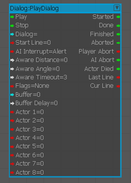

PlayDialog
Used to play a dialog.

Inputs
| Port | Type | Description |
|---|---|---|
| Play | Any | Plays the dialog |
| Stop | Any | Stops the dialog |
| Dialog | String | Name of the dialog to play |
| StartLine | Integer | Line to start the dialog from |
| AI Interrupt | Integer | AI interrupt behavior; values are Never, Alert, and Combat |
| AwareDistance | Float | Distance that player is considered as listening at |
| AwareAngle | Float | View angle that player is considered as listening at |
| AwareTimeout | Float | Time out until non-aware player aborts dialog |
| Flags | Integer | Dialog playback flags |
| Buffer | String | Stores the dialog. Only one dialog can be played at any time in each buffer |
| BufferDisplay | Float | How many more seconds the dialog will wait until the previous dialog in its dialog has finished |
| Actor 1-8 | Any | Actor entity IDs |
Outputs
| Port | Type | Description |
|---|---|---|
| Started | Any | Triggered when the dialog has started |
| Done | Any | Triggered when the dialog has finished or aborted |
| Finished | Any | Triggered when the dialog has finished |
| Aborted | Any | Triggered when the dialog has aborted |
| PlayerAbort | Integer | Triggered when the dialog has aborted because the player is out of range or out of view |
| AIAbort | Any | Triggered when the dialog has aborted because the AI got alerted |
| ActorDied | Any | Triggered when the dialog has aborted because the Actor died |
| LastLine | Integer | Last line played when the dialog was aborted |
| CurLine | Integer | Current line; triggered whenever a line starts |